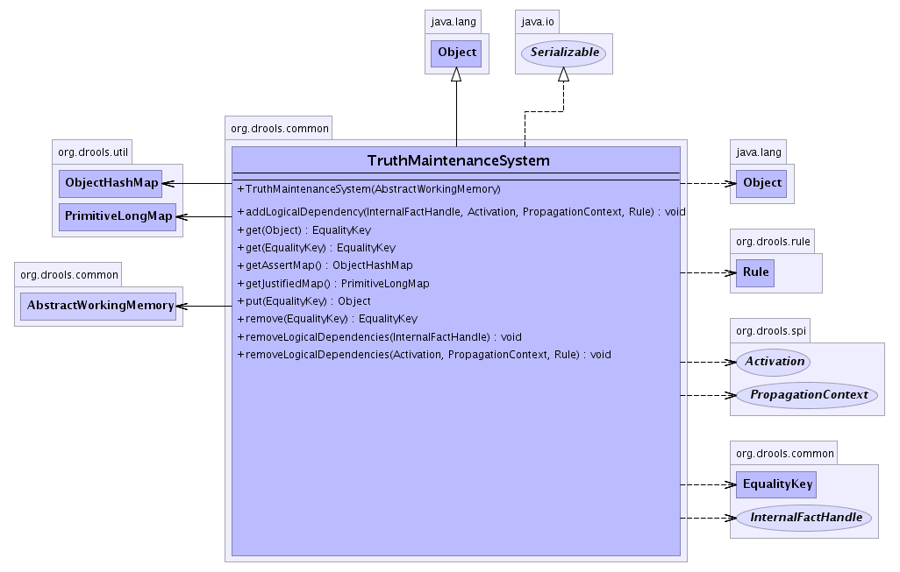

org.drools.common
Class TruthMaintenanceSystem
java.lang.Object
 org.drools.common.TruthMaintenanceSystem
org.drools.common.TruthMaintenanceSystem
- All Implemented Interfaces:
- java.io.Serializable
public class TruthMaintenanceSystem
- extends java.lang.Object
- implements java.io.Serializable
The Truth Maintenance System is responsible for tracking two things. Firstly
It maintains a Map to track the classes with the same Equality, using the
EqualityKey. The EqualityKey has an internal datastructure which references
all the handles which are equal. Secondly It maintains another map tracking
the justificiations for logically asserted facts.
- See Also:
- Serialized Form
-
- 
| Methods inherited from class java.lang.Object |
clone, equals, finalize, getClass, hashCode, notify, notifyAll, toString, wait, wait, wait |
TruthMaintenanceSystem
public TruthMaintenanceSystem(AbstractWorkingMemory workingMemory)
getJustifiedMap
public PrimitiveLongMap getJustifiedMap()
getAssertMap
public ObjectHashMap getAssertMap()
put
public java.lang.Object put(EqualityKey key)
get
public EqualityKey get(EqualityKey key)
get
public EqualityKey get(java.lang.Object object)
remove
public EqualityKey remove(EqualityKey key)
removeLogicalDependencies
public void removeLogicalDependencies(Activation activation,
PropagationContext context,
Rule rule)
throws FactException
- An Activation is no longer true so it no longer justifies any of the logical facts
it logically asserted. It iterates over the Activation's LinkedList of DependencyNodes
it retrieves the justitication set for each DependencyNode's FactHandle and removes
itself. If the Set is empty it retracts the FactHandle from the WorkingMemory.
- Throws:
FactException- Parameters:
activation - context - rule -
removeLogicalDependencies
public void removeLogicalDependencies(InternalFactHandle handle)
throws FactException
- The FactHandle is being removed from the system so remove any logical dependencies
between the justified FactHandle and its justifiers. Removes the FactHandle key
from the justifiedMap. It then iterates over all the LogicalDependency nodes, if any,
in the returned Set and removes the LogicalDependency node from the LinkedList maintained
by the Activation.
- Throws:
FactException- Parameters:
handle - - The FactHandle to be removed- See Also:
LogicalDependency
addLogicalDependency
public void addLogicalDependency(InternalFactHandle handle,
Activation activation,
PropagationContext context,
Rule rule)
throws FactException
- Adds a justification for the FactHandle to the justifiedMap.
- Throws:
FactException- Parameters:
handle - activation - context - rule -